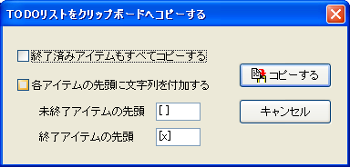

選択した予定メモ，フリーメモに対して， 切り取り，コピー，貼り付けを行うことができます．
選択した日付メモ，フリーメモの内容に対して 切り取り，コピー，貼り付け操作を行うことができます．
日付メモの全体に対して操作を行なうときは， 日付を選択し，メニューの[編集]-[切り取り]，[編集]-[コピー]，[編集]-[貼り付け]，[編集]-[追加貼り付け]を選ぶか， 右クリックでのポップアップメニューから[日付メモの切り取り]，[日付メモのコピー]，[日付メモの貼り付け]，[日付メモに追加貼り付け]を 選択してください．
日付メモに記入されている内容は，通常のテキスト文字列としてコピーされるため， 予定メモ，フリーメモ，あるいは他のテキストエディタなどとの間を自由に移動することができます． コピーされるのは文字列だけで，日付ごとの着色まではコピーされません．
通常の貼り付け動作は，その日の予定を新しい予定によって置換します． 「追加貼り付け」は，貼り付け対象の日に記入されている内容はそのままに，末尾に文字列を追加します．
文字列の一部だけを操作するときは， 文字列を選択し，メニューあるいはポップアップメニューの[切り取り]，[コピー]，[貼り付け]を 選択してください． [追加貼り付け]は，日付メモの編集中には有効ですが，フリーメモなど，他の部分の編集中には通常の貼り付け動作となります．
切り取り，貼り付け処理，日付メモの着色に対しては， [編集]-[元に戻す]を選ぶことによって， 処理を１段階キャンセルすることができます． これによってキャンセルされるのは内容の変更だけで， クリップボードの内容自体は最新の状態から変化しません． また，テキスト編集中は，テキストの編集が１段階 キャンセルされ，予定メモの切り取りや貼り付けはキャンセルされませんので， 注意してください．
テキスト編集に対しては１段階しか戻せませんし， 編集を一度終了すると，以前の状態には戻せなくなります． しかし，日付メモの切り取り・貼り付け，日付メモの着色に対しては 複数段階(最大256段階)，前の状態に戻すことができます．
ファイルを保存した時点で，[元に戻す] は使えなくなります．
TODOリストをクリップボードへコピーするには， メニューから[編集]-[TODOリストをクリップボードへコピー]， あるいはTODO管理ダイアログから[クリップボードへコピー]ボタンを押す， あるいはTODOリストを右クリックしたコンテキストメニューから[リストをクリップボードにコピー]を選択します．
コピーを指定するダイアログでは，次のオプションを設定して， [コピーする]を選ぶとデータがコピーされます．
ポップアップ表示のときは，書式設定はすべて無効ですが， 日付メモの内容，周期予定，期間予定，リンクされたTODOなど， 設定に従ってすべての文字列が表示されます．
この文字列は， [編集]-[予定をエクスポート用にコピー]を選択することで コピーすることができます． 複数の日のデータを同時にクリップボードにコピーしたい場合は， エクスポート機能が利用可能です．
日付にカーソルを合わせた場合に表示されたウィンドウの場合は日付のクリックで， 日付セルからはみ出した内容がポップアップしている状態では そのウィンドウをクリックすることで，表示状態を維持できます． この状態では，ウィンドウ内のテキストを範囲選択し， ショートカットキー(CTRL+C)でのコピーが可能です．